I use strategic design to innovate and solve problems.
I’ve cultivated a blend of creative vision, entrepreneurial resourcefulness, and strategic acumen, over 15+ years of design and leadership experience, making me adept at delivering solutions that create human-centred value and capture business value.
My ethos aligns with a holistic approach to education, life, and work, prioritising understanding, thought, and culture. This philosophy has led me to leadership roles across geographies, from co-founding a design studio serving high-end clients in South East Asia and Australia to spearheading strategic design initiatives at one of South Africa's largest banks.
I'm passionate about creativity, driving innovation, and bridging the gap between business goals and meaningful impact. As a lifelong learner and advocate for design, I'm always eager to push boundaries, embrace new challenges, and collaborate with like-minded co-conspirators for experience-led innovation.
Professional Experience
2018 - Present
Nedbank
- 2021: Head of Design Strategy, leading a strategic design function across four disciplines and 30+ practitioners. Directly support the Executive Head of Design, driving strategic initiatives and maturing the design Centre of Excellence.
- 2019: Promoted to Head of CX Design, overseeing Design Research and CX Design teams.
- 2018: Joined Nedbank as Design Research Lead, fostering best practices and driving insights-led innovation.
2006 - 2018
Tenaka
- 2013: Acquired shareholding and became a co-owner, formulating business strategies and interfacing with key clients and our board of directors.
- 2010: Transitioned to Director of Consulting Services, driving strategic initiatives and mentoring personnel.
- 2006: Joined the agency as a Web Designer, rapidly progressing to Studio Director in 2008 (led the creative studio with emphasis on team culture and productivity).
2004 - 2007
Ram Media Sdn. Bhd.
- 2005: Moved operations from Kuala Lumpur to Sydney, Australia before moving back to South Africa in late 2006.
- 2004: Co-founded a Digital Design studio post-graduation. Catered to high-end office furniture manufacturers, key clients were Wilkhahn and Haworth.
A few examples of projects I’ve led or directly supported over the past 12-18 months. The examples provided aim to demonstrate the diverse ways that I, and the team I am responsible for, drive impact and deliver value to our organisation.
01
Design Maturity Model
Created a current and future state view of design maturity at Nedbank.
02
Design Toolkit
Conceptualised and launched a set of tools to equip agile teams with human-centred design methods.
03
DigiSkills
A pilot to create sustainable livelihoods in partnership with Microsoft and Afrika Tikkun Services.
Education
2022
Global MBA in Digital Transformation
Zigurat & Technology Business School – Barcelona, Spain
Zigurat's Global MBA in Digital Transformation focuses on mastery and implementation of effective digital transformation strategies. Based on real-life case studies and guided by insights from faculty who are experienced executives, this program enables students to apply problem-solving strategies, consider risk mitigation and improve productivity in their organisations.
I completed my course with a Final Master Thesis grade of 81%
2003
Advanced Diploma: Interactive Multimedia & Design
Limkokwing University of Creative Technology – Kuala Lumpur, Malaysia
Graduated from LUCT’s Interactive Multimedia & Design undergrad program in 2003. In 2009, my alma mater invited me to interview for a series of feature articles profiling successful alumni which is available to view at: www.limkokwing.net/malaysia/community/alumni/ramo_phalatsi
1998 – 2001
National Higher Diploma: Graphic Design
Limkokwing University of Creative Technology – Kuala Lumpur, Malaysia
I studied Graphic Design at Nelson Mandela University, in Port Elizabeth, South Africa from 1998 - 2001 but did not complete my programme.
1997
Matriculation (High School Graduation)
Michaelhouse – Balgowan, South Africa
Michaelhouse is a school grounded in rich history and strong traditions. The school emphasises a holistic approach to education, rather than focusing solely on academics, sports, or culture. Their ethos is dedicated to creating "men of understanding, thought, and culture.
Notable achievements:
- Appointed as a house prefect (leader) for Mackenzie House
- 1st team (AKA varsity team / A-team) for Basketball
- 2nd team for Hockey
Get in Touch.
+27 84 700 4449
ramophalatse@gmail.com